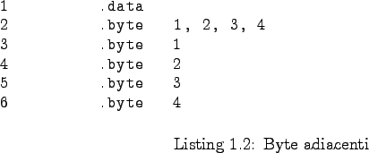

Next: La sezione .code Up: Sezioni Previous: Sezioni Indice Indice analitico
EduMIPS64 supporta diversi tipi di dato, che sono descritti nella tabella  .
.
Dati di tipo doubleword possono essere introdotti sia dalla direttiva .word che dalla direttiva .word64.
Esiste una differenza sostanziale tra la dichiarazione di una lista di dati
utilizzando un'unica direttiva oppure direttive multiple dello stesso tipo.
EduMIPS64 inizia la scrittura a partire dalla successiva double word a 64 bit non appena
trova un identificatore del tipo di dato, in tal modo la prima istruzione .byte
del listato  inserirà i numeri 1, 2, 3 e 4 nello spazio di 4 byte,
occupando 32 bit, mentre il codice delle successive quattro righe inserirà ciascun numero
in una differente cella di memoria, occupando 32 byte, come specificato nella tabella
inserirà i numeri 1, 2, 3 e 4 nello spazio di 4 byte,
occupando 32 bit, mentre il codice delle successive quattro righe inserirà ciascun numero
in una differente cella di memoria, occupando 32 byte, come specificato nella tabella  .
.

Nella tabella  , la memoria è rappresentata utilizzando celle di dimensione pari
ad 1 byte e ciascuna riga è lunga 64 bit. L'indirizzo posto alla sinistra di ogni riga della tabella è
riferito alla cella di memoria più a destra, che possiede l'indirizzo più basso rispetto alle otto celle in ciascuna linea.
, la memoria è rappresentata utilizzando celle di dimensione pari
ad 1 byte e ciascuna riga è lunga 64 bit. L'indirizzo posto alla sinistra di ogni riga della tabella è
riferito alla cella di memoria più a destra, che possiede l'indirizzo più basso rispetto alle otto celle in ciascuna linea.
La direttiva .ascii accetta stringhe contenenti un qualunque carattere ASCII,
ed alcune ``sequenze di escape'', simili a quelle presenti nel linguaggio C, che sono descritte nella
tabella  , ed inserisce tali stringhe in memoria.
, ed inserisce tali stringhe in memoria.
La direttiva .asciiz si comporta esattamente come il comando .ascii, con la differenza che essa pone automaticamente alla fine della stringa un byte nullo.
|
andrea 2007-08-22